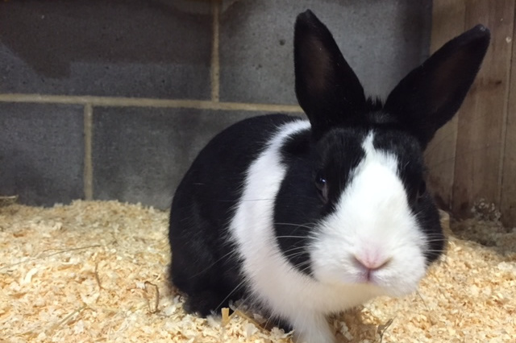

Fife Farm Park was created in 2003 as a fun and friendly place for families to enjoy the countryside. The park is home to a variety of animals, including goats, sheep, ponies, chickens, and rabbits. Visitors can feed the animals, explore the farm trails, and enjoy homemade food at the small country café. Over the years, Fife Farm Park has become a popular local attraction, welcoming thousands of visitors each year.

